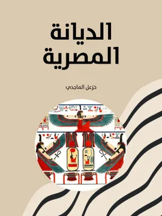

الديانة المصرية: المعتقدات - الأساطير - الطقوس - الأخرويات - الأخلاق والشرائع - السير المقدسة - الجماعة - الباطنيات

قراءة عربية أصلية محددة النطاق في الصفحات 13، 14 من ملف PDF المرتبط، وليست تلخيصا كاملا للكتاب. نناقش ما تدعمه هذه المقاطع فقط.
من الشعر إلى موسوعة الديانة
يسترجع الماجدي كيف انتبه مع الكتابة إلى قطار عمره وقد وُضع على سكة طويلة لا تنتهي إلا مع نهاية العمر؛ فالكتابة مهنته الوحيدة، تناغمت مع أعماقه، وجاءت لتعوضه عن غربته عن العالم الواقعي، وكان الخوف من انتزاع حريته دافعه ليخترع رقمًا صعبًا يستعصي فك رموزه. ويصف بداياته بأنها كانت ساذجة، لم يتصلب عوده في الشعر إلا بعد اطلاع طويل على شعر الشعوب، ثم بدأت رحلته الحقيقية حين اختلط بالوسط الأدبي والشعري المستعر بالجدل العميق والخلاق، ونشر مجاميعه الشعرية ابتداء من ثمانينيات القرن الماضي، وجاء المسرح حقلًا موازيًا.
زاوية وحدود القراءة
هذه قراءة في مطلع مقدمة المؤلف من الصفحتين 13 و14، لا عرضًا لمحتوى الموسوعة التاريخي والديني. نقرأ المؤلف بوصفه مرجعًا بحثيًا واحدًا بين مراجع، ونترك الحكم على دقته العلمية للمتخصصين في المصريات وتاريخ الأديان.
الطبعة والقراءة
هذه النسخة من الكتاب صادرة ومتاحة مجانًا بموجب اتفاق قانوني بين مؤسسة هنداوي والسيد الدكتور خزعل الماجدي.
تنزيل PDF المجاني ↓ القراءة والمصدر الرسمي ↗